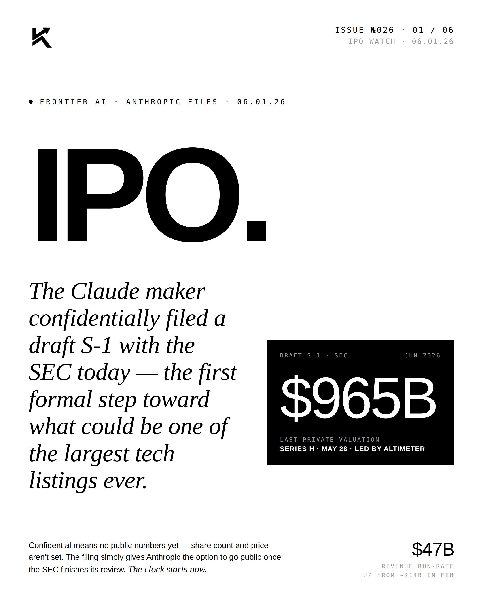
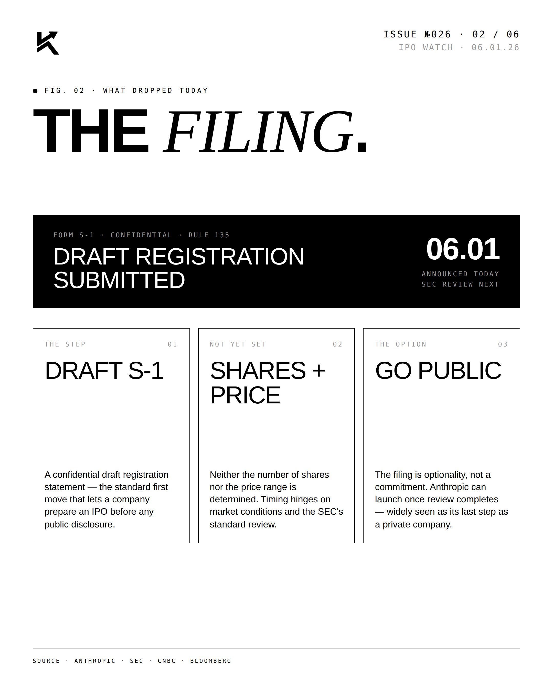
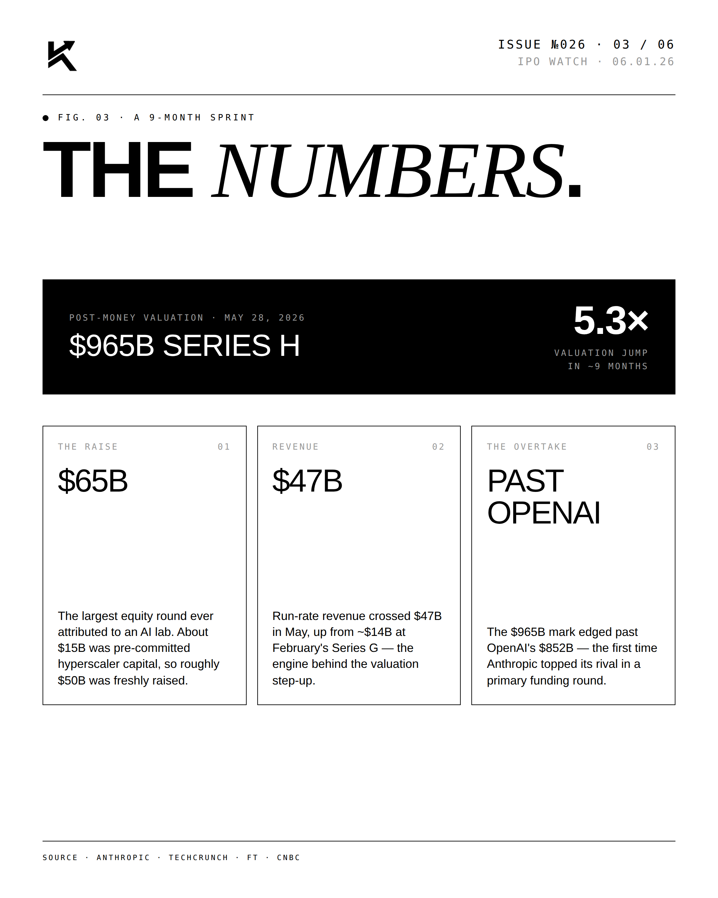
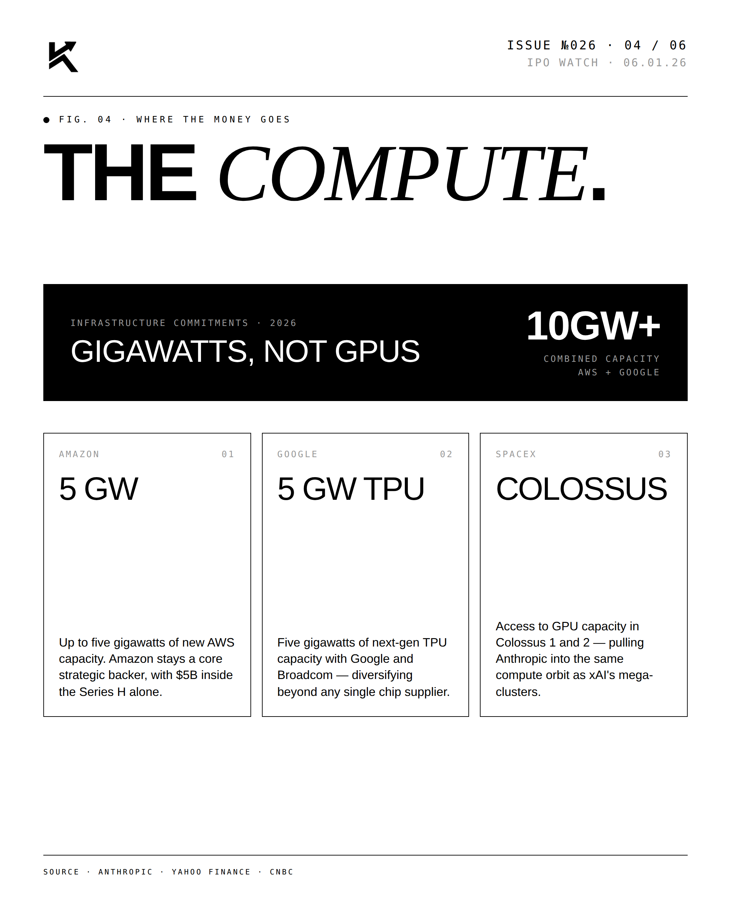
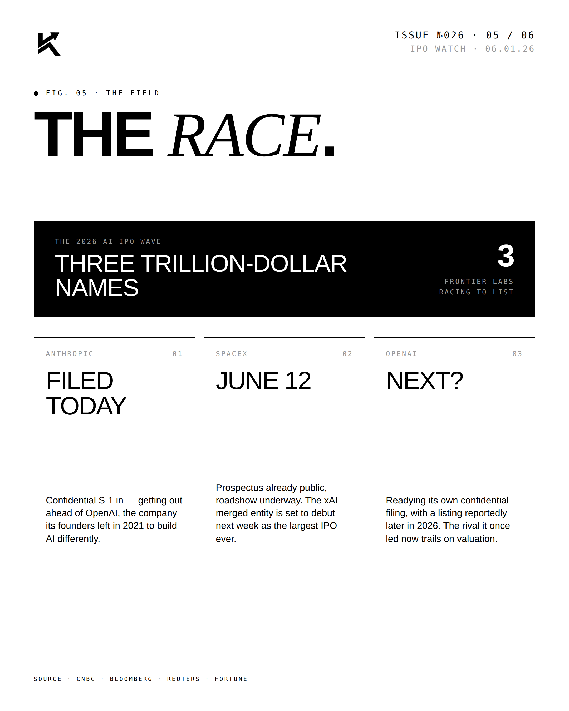
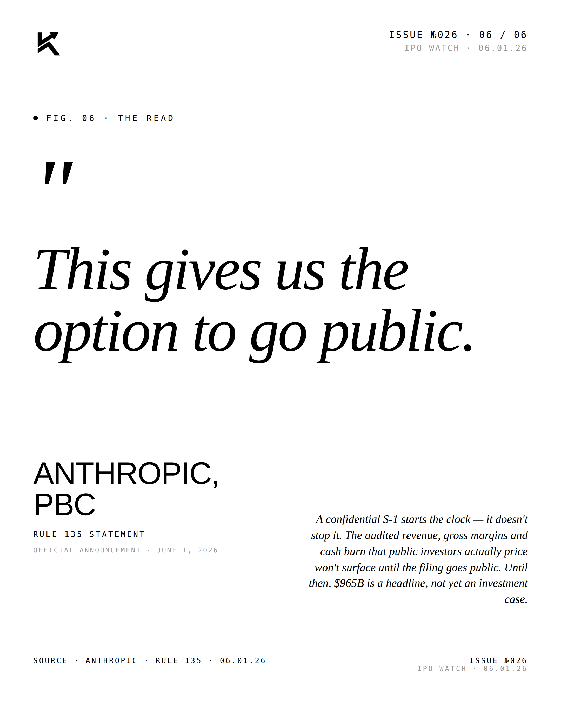

IPO WATCH · ANTHROPIC FILES · 06.01.26
IPO.
The Claude maker confidentially filed a draft S-1 with the SEC today — the first formal step toward one of the largest tech listings ever.

The Lead.
Twenty-four hours after closing the $65B Series H, the company gives itself the option to go public. The S-1 is confidential; pricing, range, and ticker still TBD.




"This gives us the option
to go public."ANTHROPIC, PBCDRAFT S-1 STATEMENT · On the confidential filing · June 1, 2026
